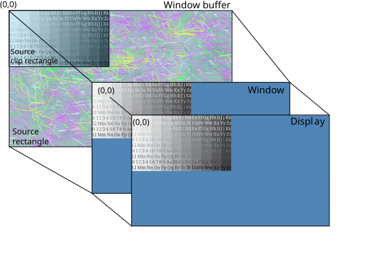

Set your source clip rectangle size and position to target only a portion of your source rectangle for display.
Screen uses the default position of (0,0) as the top left corner of your source rectangle, your window, your display, and your source clip rectangle.
The source clip rectangle is typically used when your buffer includes content that's not intended to be displayed. For example, some hardware requires use of buffers that are of a specific size. When the buffer size is fixed, the buffer may contain undefined content that you don't want displayed. When you specify a source clip rectangle, you ensure that the area of the buffer outside your source clip rectangle won't be displayed.
Let's say we're required to use a buffer size of 1280x720, but our source image is only 640x360. Therefore, there's area in our buffer that's never intended for displaying. In this example, we'll set the source clip rectangle to specify the area of the source rectangle that should be displayed. Consider the following properties:
| Property | Window | Value |
|---|---|---|
| SCREEN_PROPERTY_SIZE | Parent | 1280x720 |
| SCREEN_PROPERTY_BUFFER_SIZE | Owner | 1280x720 |
| SCREEN_PROPERTY_SOURCE_SIZE | Owner | 1280x720 |
| SCREEN_PROPERTY_SOURCE_CLIP_SIZE | Owner | 640x360 |
| SCREEN_PROPERTY_SOURCE_CLIP_POSITION | Owner | (0, 0) |
To set these properties, use the corresponding window property with the Screen API function, screen_set_window_property_iv():
screen_window_t screen_win; /* your window */
int win_srcsize[2] = { 1280, 720 }; /* size of your window buffer and source rectangle */
int win_srcclipsize[2] = { 640, 360 }; /* size of your source clip rectangle */
int srcclippos[2] = { 0, 0 }; /* position of your source clip rectangle */
int win_color = 255; /* your window background color */
...
screen_set_window_property_iv(screen_win, SCREEN_PROPERTY_BUFFER_SIZE, win_srcsize);
screen_set_window_property_iv(screen_win, SCREEN_PROPERTY_SOURCE_SIZE, win_srcsize);
screen_set_window_property_iv(screen_win, SCREEN_PROPERTY_SOURCE_CLIP_SIZE, win_srcclipsize);
screen_set_window_property_iv(screen_win, SCREEN_PROPERTY_SOURCE_CLIP_POSITION, srcclippos);
screen_set_window_property_iv(screen_win, SCREEN_PROPERTY_COLOR, &win_color);
...

The source rectangle is the same size as the window buffer. That means that the source rectangle includes both your source image and parts of the buffer that are not intended for display. To prevent the unwanted area from being displayed, the source clip rectangle is set to the same size as your source image. By doing so, only your source image is targeted for display. The area that's not within the source clip rectangle is filled with the window background color (blue, in this case).